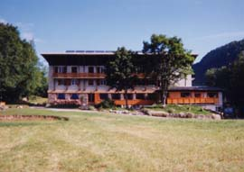

Gîte Champel (1200 m)

Département, commune : Haute Savoie, commune de St Gervais les Bains
Carte : IGN Top25 3531 ET pli D1
Situation : hameau de Champel. Adresse : 134 impasse des Iris, le Champel, 74170 St Gervais, tél 04 50 47 77 55, fax 04 50 93 57 20
Propriétaires-Gardiens : Serge et Nathalie Errard
Ouverture et gardiennage : ouvert et gardé toute l’année
Commodités : 42 places (chambres de 2 à 4 p, dortoir à lits superposés avec matelas, couvertures, draps en location ou sac à viande obligatoire, oreiller),
restauration, bar,
eau potable à l’intérieur et à l’extérieur.
Accès : en voiture (6 km de St Gervais)
Itinéraires à proximité : TMB, TPMB
Randonnées à partir du refuge :
guide ou site AsF© : Mont Vorassay, Plan Glacier
autres randonnées : Nid d’Aigle